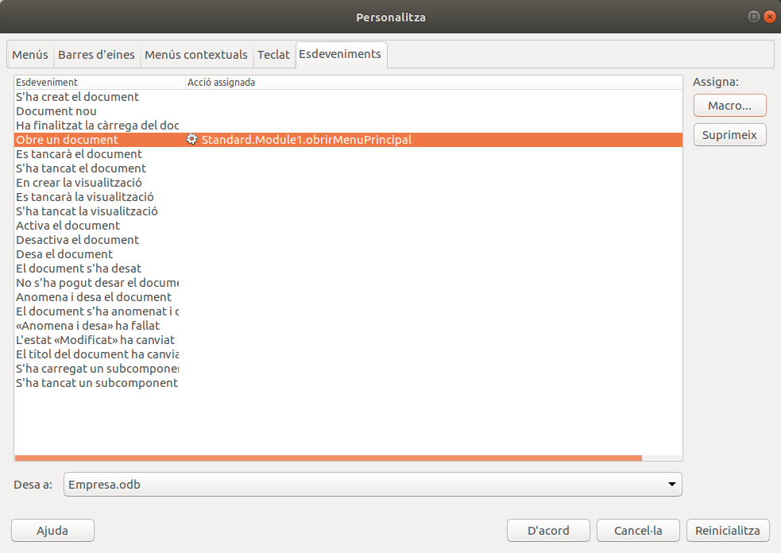

2.3 Obrir automàticament un formulari
Amb la creació del formulari Menú principal estem fent una espècie d'aplicació basada en la Base de Dades, de manera que un usuari no expert podria veure i actualitzar la informació a partir dels formularis, i el Mnú principal li permetria navegar per ells.
Per a completar aquesta "aplicació", podríem intentar que en obrir la Base de Dades Empresa.odb, automàticament s'obrira el formulari Menú principal.
Ho podem aconseguir creant una nova macro per a obrir el formulari Menú principal, però no serà tan senzilla com les d'abans, ja quepel moment en què voldrem obrir aquest formulari (al principi, de forma automàtica), ens hem d'assegurar que ja s'ha fet la connexió a aquesta Base de Dades. No podem estar segurs perquè l'estem obrint en aquest moment.
Copieu la següent macro al final del Module1 de Empresa.odb:
Sub obrirMenuPrincipal
If Not Thisdatabasedocument.currentcontroller.isConnected Then Thisdatabasedocument.currentcontroller.connect
ThisDatabaseDocument.FormDocuments.getbyname("Menú Principal").open
End SubI ara, per a que s'execute aquesta macro en obrir Empresa.odb, hem d'anar a Eines -> Personalitza -> pestanya Esdeveniments , i en l'opció Obre un document triar la macro obrirMenuPrincipal

Llicenciat sota la Llicència Creative Commons Reconeixement NoComercial SenseObraDerivada 2.5